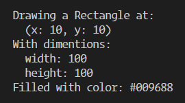

Модуль 16
Реализовать следующий функционал:
- Создать базовый класс Shape, который принимает значения цвета и координат x и y: color, initX, initY.
- Создать методы класса Shape:
- getColor() - возвращает значение цвета.
- setColor(val) - получает и записывает новое значение цвета.
- getCoords() - возвращает координаты x и y.
- moveTo(newX, newY) - принимает 2 параметра, новые значения для x и y и записывает их.
- Создать класс Rectangle который расширяет класс Shape, принимая значения цвета и начальных координат, как его родительский класс, и еще значение ширины и высоты сторон initWidth и initHeight:
- Создать методы класса Rectangle:
- setWidth(newWidth)и setHeight(newHeight) - получают ширину/высоту и записывают новые значения.
- getDims() - метод который возвращает значения width и height.
- draw() - метод который имитирует рисование прямоугольника используя методы Shape и Rectangle, выводя в консоль браузера следующей информации:

- Создать класс Circle который расширяет класс Shape, принимая значения цвета и начальных координат, как его родительский класс, и еще значение радиуса initRadius:
- Создать методы класса Circle:
- getRadius() - возвращает текущее значение радиуса.
- setRadius(val) - получает значение и присваивает его радиусу.
- draw() - метод который имитирует рисование круга используя методы Shape и Circle, выводя в консоль браузера следующей информации: